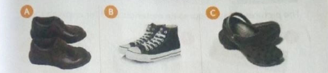

What materials are our shoes made of?
Shoes are made from different materials. They can be made from leather, plastic, or canvas.
What materials do we use to clean our shoes?
Materials used to clean shoes are:
- Shoe brush
- Shoe polish
- A piece of cloth
- Water and soap
- A piece of stick
- Old newspapers
How do we clean leather shoes?
Materials needed: Leather shoes, shoe polish, two shoe brushes, a piece of cloth, warm water, soap, a blunt stick, a basin or a bucket, and old newspapers.
Procedure:
- If necessary, cover the surface with old newspapers.
- Remove any mud from the soles using a blunt stick.
- Dispose of the old newspapers and the mud appropriately.
- Wipe the shoes using a piece of cloth to remove any dust.
- Remove the shoe laces, if any. If the shoe laces are dirty, wash them in soapy water, rinse them, and hang them to dry.
- Wipe the shoes with a damp cloth dipped in soapy water. Wipe the shoes again using a clean damp cloth. Leave the shoes to dry in the shade for a few minutes.
- Apply shoe polish using a soft shoe brush. Allow the polish to soak in for a few minutes.
- Brush the shoes in a dry airy place. Stuff them with newspapers if storing them for a long time.
How do we clean plastic shoes?
Materials needed: Plastic shoes, a piece of cloth or a soft brush, warm water, soap, old newspapers, a blunt stick, and a basin or a bucket.
- If necessary, cover the surface with old newspapers.
- Remove any mud from the soles using a blunt stick.
- Dispose of the old newspapers and the mud appropriately.
- Put some warm water in a basin or bucket.
- Add some soap and stir.
- Dip the shoes in the soapy water. Scrub them using a cloth or a soft brush.
- Rinse the shoes well in clean water.
- Dry the shoes in the shade.
How do we clean canvas shoes?
Materials needed: Canvas shoes, soap, water, a basin or a bucket, soft brush, or a scrubbing cloth.
- Remove the shoe laces if any. Wash the shoe laces in soapy water if they are dirty. Rinse them and hang them to dry.
- Remove any mud from the soles using a blunt stick.
- Hit the shoes gently against each other to remove dust.
- Remove the insoles from the shoes.
- Wash the shoes and insoles in warm soapy water. Scrub them with a cloth or a soft brush.
- Rinse the shoes and the insoles in clean water. Shake them to remove excess water.
- Dry the shoes by placing them against a wall in a slanting position.
- After they dry, put the laces and insoles back and store the shoes in an airy place.
- Put some newspapers in the shoes to prevent them from losing shape.
How can we observe safety when cleaning shoes?
- Use a blunt piece of stick to remove mud. Do not use a sharp one.
- Use warm water when cleaning. Do not use hot water.
- Store cleaning materials in a locked place.
- Store shoes properly after cleaning.
How do we care for and store the materials we use to clean shoes?
The following are some ways of taking care of the materials we use to clean our shoes.
- Store shoe polish on a shelf away from small children.
- Store shoe brushes on a shelf with the bristle facing up.
- Clean the scrubbing brush and store it on a shelf with the bristles facing up.
- Wash the cleaning cloth in soapy water and dry it. Fold and store it on a shelf.
- Wash basins and buckets and store them in a shaded area.
Exercise
- Write the materials used for making shoes.
- Your parent has asked you to clean your canvas shoes. Write down the materials you will use.
- How do we take care of basins and buckets after cleaning our shoes?
- You have been asked to teach other children how to clean their shoes. Write two safety measures you will tell them to observe when cleaning their shoes.
- Why are shoe brushes stored with the bristles facing up?